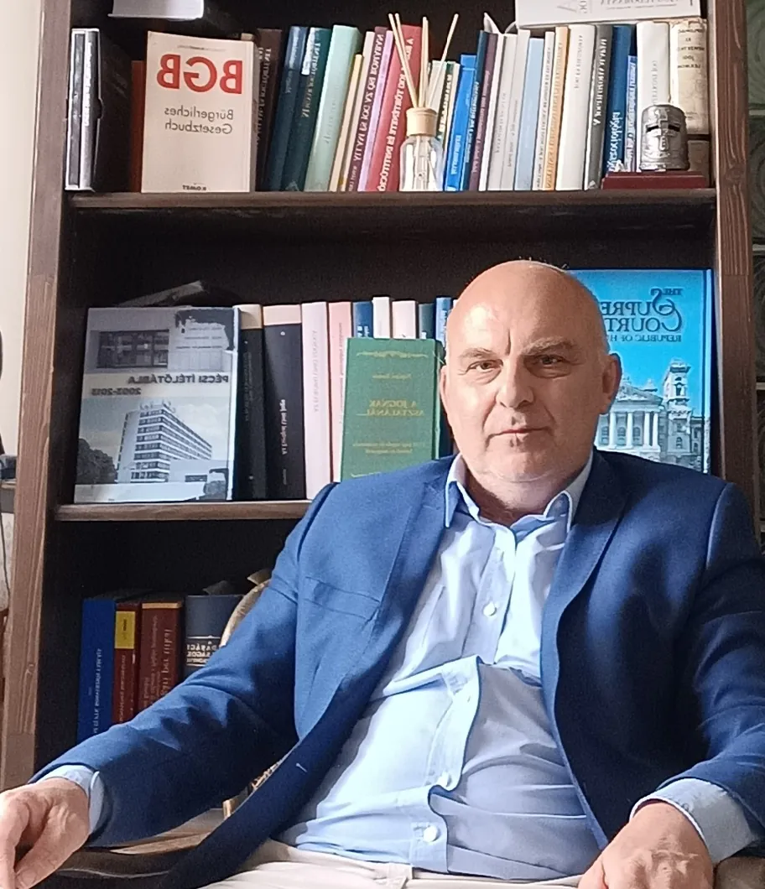
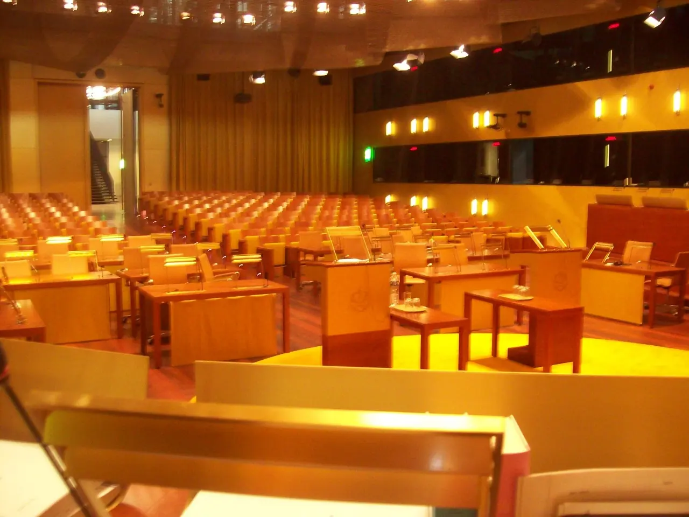

Ubi jus, ibi remedium – ahol a jog, ott az orvoslat
Ügyvéd Komlón, magyar, német és francia nyelven
Hat évig dolgoztam az Európai Unió Bíróságán Luxembourgban, 2013 óta vagyok ügyvéd. Irodám Komló központjában, a Tröszt irodaházban található.
- Pécsi Ügyvédi Kamarabejegyzett ügyvéd, felelősségbiztosítással
- 2013 óta ügyvédjogi szakvizsga 2010-ben, „cum laude”
- 6 év az EU BíróságánLuxembourg, német és magyar nyelvű ügyek
- Magyarul, németül, franciáulszemélyesen vagy Skype-on, Zoomon
Szakterületek
„Egyéni ügyvédként elsősorban a mindennapokban felmerülő, gyakori jogi problémák megoldásával foglalkozom. […] Emellett vállalom természetesen képviselet ellátását polgári, közigazgatási, munka- és büntető ügyekben egyaránt.”Visszahívást kérek
Polgári jog
Adásvételi és egyéb szerződések, okiratok szerkesztése, véleményezése, földhivatali ügyintézés.
Családi és öröklési jog
Vagyonközösség megszüntetése, bontóper, végrendelet, öröklési szerződés, hagyatéki ügyek.
Társasági jog
Cégalapítás, átalakítás, tanácsadás cégügyekben; egyesületek, alapítványok.
Fogyasztóvédelmi jog
Szavatossági és jótállási igények, fellépés márkaszervizekkel és tisztességtelen feltételekkel szemben.
Munkajog
Munkavállalói és munkáltatói képviselet, felmondás, munkaügyi szabályzatok.
Követelésbehajtás, jogviták
Felszólító levél, elektronikus és európai fizetési meghagyás, perbeli képviselet.
Külföldi féllel szembeni fellépés
Követelés német nyelvterületen honos cégekkel és magánszemélyekkel szemben.
Európai uniós jog
Tanácsadás, szakvélemény, fellépés az Európai Bíróság előtti előzetes döntéshozatali ügyekben.
Deviza alapú kölcsönszerződések
Szerződések és banki dokumentumok átnézése, tanácsadás, jogi képviselet.
Baleseti kártérítés
Közlekedési, munkahelyi és más balesetből eredő kártérítési igények érvényesítése.
Büntetőjog
Védelem és képviselet büntetőügyekben.
Közigazgatási jog
Képviselet hatóságok előtt és a bírósági eljárásban.
Bejelentővédelmi ügyvéd
Közreműködés a munkahelyi visszaélés-bejelentési rendszerekben.
Külföldön dolgozott, és nem fizették ki?
Német nyelvtudással és uniós jogi ismeretekkel vállalom a német nyelvterületen honos cégekkel és magánszemélyekkel szembeni követelések érvényesítését – a felszólító levéltől a külföldi bíróság előtti képviseletig.
Hol dolgozott vagy kivel szerződött?
Válasszon egyet:
Mi maradt kifizetetlen?
Válasszon egyet:
Munkadíj
„A munkadíjról beszélni kötelesség az ügyvéd, és a józan ész által diktált parancs az ügyfél számára!”
A munkadíjról, a díjkedvezményekről és a várható egyéb költségekről az első konzultáción, az ügy részleteinek megismerése után tájékoztatom. Az ingatlanokkal kapcsolatos jogügyletek (adásvétel, ajándékozás, jogok alapítása, törlése) munkadíját fixen rögzítettem – ezt itt ki is számolhatja.
Nem kell elfogadnia sem az eladó, sem az ingatlanközvetítő által „javasolt” ügyvédet. Ha mégis elfogadja, a szerződést aláírás előtt érdemes átnézetnie egy olyan ügyvéddel, akiben maximálisan megbízik.
Ingatlanügylet – ügyvédi munkadíj
Adásvétel, ajándékozás, jogok alapítása, törlése.
A vételár nettó 1%-a, de legalább nettó 100 000 Ft.
Az ügylet bonyolultsága, munkaidőigénye és a vele járó felelősség alapján egyedi ajánlatban ettől felfelé és lefelé is eltérhet.
Ajánlatot kérek erre az ügyletreRólam
- 1994Gépészmérnöki oklevél a Budapesti Műszaki Egyetemen; tíz évig mérnökként, fejlesztési vezetőként dolgoztam magyar, osztrák és német tulajdonú cégeknél.
- 2001Jogi diploma Pécsett, „cum laude” minősítéssel.
- 2005Az Európai Unió Bírósága, Luxembourg – hat évig a német és magyar nyelvű ügyekért felelős tanácsosként; több mint 200 tárgyaláson vettem részt.
- 2010Jogi szakvizsga, „cum laude” minősítéssel.
- 2013Március 1. óta ügyvéd, a Pécsi Ügyvédi Kamara tagja.

„Vallom, hogy jogállam csak ott lehet, ahol a polgárok […] a mindennapokban érvényesülő, kézzelfogható valóságnak tartják: ahol a jog, ott az orvoslat.”
Dr. Fülöp Botond
Deutschsprachiger Rechtsanwalt in Ungarn, in Komló
Mit am Gerichtshof der Europäischen Union erworbener Berufserfahrung. Tätigkeitsschwerpunkt: Europarecht.
- Auf die Anwaltsliste der Botschaft der Bundesrepublik Deutschland aufgenommen
- Sechs Jahre am Gerichtshof der Europäischen Union in Luxemburg
- Beratung auch per Skype oder Zoom
Rückruf anfordern
Hinterlassen Sie Ihren Namen und Ihre Telefonnummer – ich rufe Sie zurück und wir besprechen Ihr Anliegen auf Deutsch.
Rückruf auf DeutschKérjen visszahívást
Adja meg a nevét, a telefonszámát és röviden az ügyét. Munkaidőben visszahívom, és egyeztetünk egy időpontot.
Írja meg az érintett jogterületet és röviden az ügy lényegét. Válaszlevelemben tájékoztatom a konzultáció díjáról; ha elfogadható, egyeztetünk egy időpontot. A konzultáció feltétele a díj előzetes megfizetése.
Gyakori kérdések
Ha nem találja itt a választ, hívjon munkaidőben.
Hol található az iroda?
Komló központjában, a Tröszt irodaházban: 7300 Komló, Pécsi út 1., 1. emelet 18. Az épület előtt ingyenes a parkolás.
Milyen nyelven intézhetem az ügyemet?
Magyarul, németül és franciául. Hat évig dolgoztam az Európai Unió Bíróságán Luxembourgban, a német és magyar nyelvű ügyekért felelős tanácsosként.
Lehet online konzultálni?
Igen, Skype-on vagy Zoomon. Írja meg az érintett jogterületet és röviden az ügy lényegét; válaszlevélben tájékoztatom a konzultáció díjáról. A konzultáció feltétele a díj előzetes megfizetése.
Mennyi az ügyvédi munkadíj ingatlan-adásvételnél?
Fő szabály szerint a vételár nettó 1%-a, de legalább nettó 100 000 Ft; ügyvédi letétkezeléssel a vételár nettó 2%-a, de legalább nettó 200 000 Ft. Az ügylet bonyolultsága, munkaidőigénye és a vele járó felelősség alapján egyedi ajánlatban ettől felfelé és lefelé is eltérhet.
Mikor lehet személyesen bemenni?
Hétfőtől csütörtökig 8 és 16 óra között, pénteken 8 és 13 óra között.
Kapcsolat
- 7300 Komló, Pécsi út 1.„Tröszt” irodaház, 1. emelet 18. – ingyenes parkolás
- Mobil: 06 70 592 7517Telefon/fax: 06 72 281 299
- E-maildrfulopbotond@gmail.com
- Hétfő–csütörtök
- 8:00–16:00
- Péntek
- 8:00–13:00
- Hétvége
- zárva
Kamarai tájékoztató
Ezt a honlapot dr. Fülöp Botond, a Pécsi Ügyvédi Kamarában bejegyzett ügyvéd tartja fenn az ügyvédekre vonatkozó jogszabályok és belső szabályzatok szerint, melyek az ügyféljogokra vonatkozó tájékoztatással együtt a Magyar Ügyvédi Kamara honlapján találhatók. Felelősségbiztosítás: Magyar Ügyvédek Biztosító és Segélyező Egyesülete.